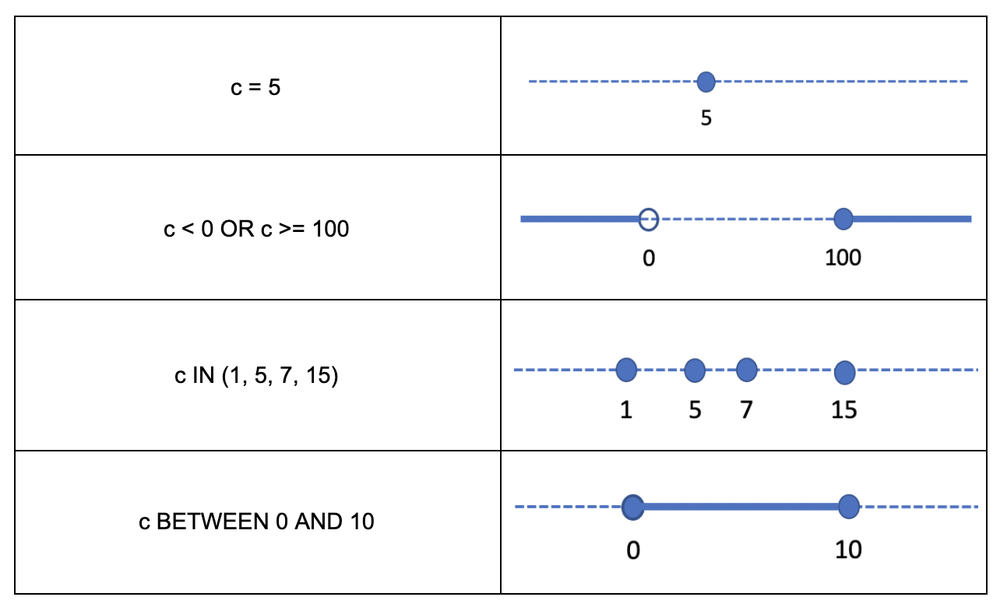
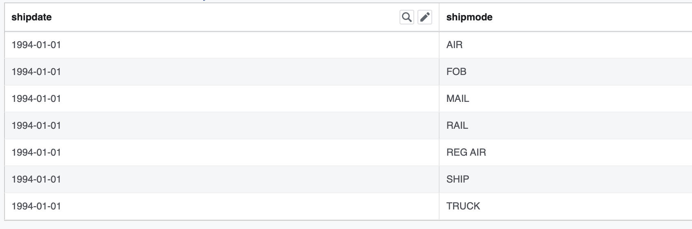

Performance Guide into TableScan and Aggregation¶
Introduction¶
In this guide I’ll explain how to investigate the performance of a scan + aggregation query that runs on Presto Native Execution, a next-generation Presto worker powered by Velox. After reading this guide you’ll know about the domain and remaining filters and how they differ, you’ll understand how to determine whether aggregation pushdown happens or not for a given query, you’ll have the tools to reproduce a production query in a unit test for quick debugging and profiling. You will also learn about special columns $path and $bucket and special table xxx$partition. The learnings from this guide can be applied to troubleshooting a failure or a crash as well.
Query Plan¶
Let’s look at a simple query (TPC-H #6):
SELECT
SUM(l.extendedprice * l.discount) AS revenue
FROM lineitem l
WHERE
l.shipdate >= CAST(DATE '1994-01-01' AS VARCHAR)
AND l.shipdate < CAST(DATE '1994-01-01' + INTERVAL '1' YEAR AS VARCHAR)
AND l.discount BETWEEN .06 - 0.01 AND .06 + 0.01
AND l.quantity < 24
The first step is to check the query plan. You can generate the plan by running the EXPLAIN command using Presto client. EXPLAIN command takes an optional parameter which specifies whether to produce a logical or distributed query plan. The distributed plan is the logical plan broken down into fragments (or stages).
Note: In Presto, the terms Fragment and Stage are used to refer to the same thing. These terms are interchangeable.
Note: You can find out more about EXPLAIN command in Presto documentation at https://prestodb.io/docs/current/sql/explain.html
Let’s generate a distributed query plan for the query above:
EXPLAIN (TYPE distributed) <query text>
This gives us the following:
Fragment 0 [SINGLE]
Output layout: [sum]
Output partitioning: SINGLE []
Stage Execution Strategy: UNGROUPED_EXECUTION
- Output[revenue] => [sum:double]
Estimates: {rows: 10000 (87.89kB), cpu: ?, memory: ?, network: ?}
revenue := sum
- Limit[10000] => [sum:double]
Estimates: {rows: 10000 (87.89kB), cpu: ?, memory: ?, network: ?}
- Aggregate(FINAL) => [sum:double]
sum := "presto.default.sum"((sum_4))
- LocalExchange[SINGLE] () => [sum_4:double]
- RemoteSource[1] => [sum_4:double]
Fragment 1 [SOURCE]
Output layout: [sum_4]
Output partitioning: SINGLE []
Stage Execution Strategy: UNGROUPED_EXECUTION
- Aggregate(PARTIAL) => [sum_4:double]
sum_4 := "presto.default.sum"((expr))
- ScanProject[table = TableHandle {connectorId=hive, connectorHandle='HiveTableHandle{schemaName=tpch, tableName=lineitem, analyzePartitionValues=Optional.empty}', layout='Optional[lineitem{domains={shipdate=[ [["1994-01-01", "1995-01-01")] ], discount=[ [["0.049999999999999996", "0.06999999999999999"]] ], quantity=[ [(<min>, "24.0")] ]}}]'}, grouped = false, projectLocality = LOCAL] => [expr:double]
Estimates: {rows: 53987447 (463.38MB), cpu: 971774042.40, memory: 0.00, network: 0.00}/{rows: 53987447 (463.38MB), cpu: 1457661063.60, memory: 0.00, network: 0.00}
expr := (extendedprice) * (discount)
LAYOUT: lineitem{domains={shipdate=[ [["1994-01-01", "1995-01-01")] ], discount=[ [["0.049999999999999996", "0.06999999999999999"]] ], quantity=[ [(<min>, "24.0")] ]}}
discount := discount:double:6:REGULAR
:: [["0.049999999999999996", "0.06999999999999999"]]
extendedprice := extendedprice:double:5:REGULAR
shipdate:string:10:REGULAR
:: [["1994-01-01", "1995-01-01")]
quantity:double:4:REGULAR
:: [(<min>, "24.0")]
This query plan has 2 sections - Fragment 0 [SINGLE] followed by Fragment 1[SOURCE] - corresponding to 2 stages of the query. Notice that stages are listed in the opposite order of execution, e.g. leaf stage where execution starts appears last. The words [SINGLE] and [SOURCE] in the fragment heading tell us how wide the stage is running. SINGLE means that the stage runs on a single node. SOURCE means that the stage runs on all nodes in the cluster.
Note
Session property max_tasks_per_stage or configuration property stage.max-tasks-per-stage can be used to limit the number of nodes used in a SOURCE stage.
Note
You can find session properties in SystemSessionProperties.java file in presto-main module. The corresponding configuration properties can be found in QueryManagerConfig.java, TaskManagerConfig.java, MemoryManagerConfig.java, FeaturesConfig.java, NodeMemoryConfig.java and WarningCollectorConfig.java files in the same module.
Note
Session properties can be used to modify behavior for a single query. Config properties specify behavior for all queries running in a given cluster. Most configuration properties have corresponding session properties, but some don’t. This is the case for properties which cannot be modified at runtime due to technical reasons.
For interactive queries, it is usually the case that all the time is spent processing the leaf stage. That’s because interactive queries tend to be cardinality reducing either through selective filtering or low-cardinality aggregation or both. Let’s take a closer look at the leaf stage plan.
Fragment 1 [SOURCE]
Output layout: [sum_4]
Output partitioning: SINGLE []
Stage Execution Strategy: UNGROUPED_EXECUTION
- Aggregate(PARTIAL) => [sum_4:double]
sum_4 := "presto.default.sum"((expr))
- ScanProject[table = TableHandle {connectorId=hive, connectorHandle='HiveTableHandle{schemaName=tpch, tableName=lineitem, analyzePartitionValues=Optional.empty}', layout='Optional[lineitem{domains={shipdate=[ [["1994-01-01", "1995-01-01")] ], discount=[ [["0.049999999999999996", "0.06999999999999999"]] ], quantity=[ [(<min>, "24.0")] ]}}]'}, grouped = false, projectLocality = LOCAL] => [expr:double]
Estimates: {rows: 53987447 (463.38MB), cpu: 971774042.40, memory: 0.00, network: 0.00}/{rows: 53987447 (463.38MB), cpu: 1457661063.60, memory: 0.00, network: 0.00}
expr := (extendedprice) * (discount)
LAYOUT: lineitem{domains={shipdate=[ [["1994-01-01", "1995-01-01")] ], discount=[ [["0.049999999999999996", "0.06999999999999999"]] ], quantity=[ [(<min>, "24.0")] ]}}
discount := discount:double:6:REGULAR
:: [["0.049999999999999996", "0.06999999999999999"]]
extendedprice := extendedprice:double:5:REGULAR
shipdate:string:10:REGULAR
:: [["1994-01-01", "1995-01-01")]
quantity:double:4:REGULAR
:: [(<min>, "24.0")]
There are two plan nodes: ScanProject and partial Aggregation. ScanProject represents two separate operators: TableScan and FilterProject. Aggregation node represents a single operator. Hence, there are 3 operators: TableScan -> FilterProject -> Aggregation. Notice that just like fragments, plan nodes / operators are listed in the opposite order of execution. ScanProject plan node where execution starts is listed last.
The Aggregation node shows that there is a single aggregate function, SUM, applied to column “expr”.
sum_4 := “presto.default.sum”((expr))
Column “expr” is produced by FilterProject operator by evaluating an expression over columns produced by TableScan operator:
expr := (extendedprice) * (discount)
ScanProject node contains a lot of information. First, it shows that we are using hive connector:
TableHandle {connectorId=hive,
Note
It is important to note the connector name as it must be used when specifying connector-specific session properties. For example, Hive-specific max_split_size session property must be specified as <connector-name>.max_split_size, e.g. hive.max_split_size.
Note
You can find Hive-specific session properties in HiveSessionProperties.java in the presto-hive module and corresponding configuration properties in HiveClientConfig.java in the same module.
Note
You can check session properties in-effect using SHOW SESSION command.
Next, the ScanProject node shows the connector handle which includes the schema, table name and other properties that are out of scope of this guide.
- connectorHandle=’HiveTableHandle{
schemaName=tpch, tableName=lineitem, analyzePartitionValues=Optional.empty}’
We see that TableScan is reading from lineitem table in tpch schema. Further, ScanProject node shows the layout which repeats the table name we already saw in the connector handle and adds a new property: “domains”. The terms here are non-intuitive - layout, domain - but the information is useful. Domains property describes the simple filters applied to individual columns. These filters are pushed deep into the ORC reader and are evaluated as part of decoding the data from the ORC streams. These can be evaluated very efficiently.
layout='Optional[lineitem{
domains={
shipdate=[ [["1994-01-01", "1995-01-01")] ],
discount=[ [["0.049999999999999996", "0.06999999999999999"]] ],
quantity=[ [(<min>, "24.0")] ]}}]'}
There are 3 filters on columns “shipdate”, “discount” and “quantity”. The filter on column “quantity” correspond to the “l.shipdate >= CAST(DATE ‘1994-01-01’ AS VARCHAR) AND l.shipdate < CAST(DATE ‘1994-01-01’ + INTERVAL ‘1’ YEAR AS VARCHAR)” expression. The filter on column “discount” corresponds to the “l.discount BETWEEN .06 - 0.01 AND .06 + 0.01” expression. The filter on column “quantity” corresponds to the “l.quantity < 24” expression.
Note
In Velox, these filters are represented by Filter classes defined in velox/type/Filter.h and applied by SelectiveColumnReader defined in velox/dwio/dwrf/reader/SelectiveColumnReader.h .
Note
In Velox, SubfieldFilters is a map of filters keyed on Subfield which represents the column name. Velox uses Subfield class and not std::string or similar for the column name because a filter can apply to a nested column in a struct or an element of an array or map. In these cases, having a more structured representation of the “column” is helpful. An example of such a filter would be a.b.c = 5 or a[5] < 10 or m[“cats”] > 100.
Note
In the Java codebase, these filters are represented by TupleDomainFilter classes.
What kind of filters should one expect to appear in the “domains” property? A filter qualifies if (1) it applies to a single column or subfield of scalar type, e.g. not a map, array or struct; (2) it can be represented as a final set of disjoint ranges of values. These filters are therefore sometimes called range filters. Here are some examples for an integer column. These trivially extend to floating point columns, strings and booleans.
{kind=link}
ScanProject node header concludes with the list of columns projected out of the operator. In this query, ScanProject projects out a single column “expr” of type DOUBLE.
… => [expr:double]
The rest of the information in the ScanProject node is a list of columns used by the operator. First come regular columns, followed by partition keys. For each column, there is column name and type, e.g discount:double.
- discount := discount:double:6:REGULAR
:: [[“0.049999999999999996”, “0.06999999999999999”]]
extendedprice := extendedprice:double:5:REGULAR
- shipdate:string:10:REGULAR
:: [[“1994-01-01”, “1995-01-01”)]
- quantity:double:4:REGULAR
:: [(<min>, “24.0”)]
If we turn lineitem into a partition table with partition keys shipdate and shipmode, ScanProject node will show all partition keys with a list of values that apply to this specific query. This can be used to find out how many total partitions are read by multiplying the number of values for each partition key. Here we have 7 values for partition key “shipmode” and 366 values for “shipdate”. There are a total of 7 * 366 = 2562 partitions accessed by the query.
- shipdate:string:-13:PARTITION_KEY
:: [[“1994-01-01”], [“1994-01-02”],…]
- shipmode:string:-14:PARTITION_KEY
:: [[“AIR”], [“FOB”], [“MAIL”], [“RAIL”], [“REG AIR”], [“SHIP”], [“TRUCK”]]
Note
The calculation of the total number of partitions is an approximation as not all combinations of the partition key values might exist.
Note
Partition pruning happens on the coordinator. The workers never see partitions not listed in the query plan.
When a query under investigation accesses multiple partitions, it is often helpful to modify the query to access a single partition. You can do so by adding equality filters for all the partition keys using values from the query plan. For example, our query can be modified like this:
SELECT
SUM(l.extendedprice * l.discount) AS revenue
FROM lineitem l
WHERE
l.shipdate = '1994-01-01'
AND l.shipmode = 'AIR'
AND l.discount BETWEEN .06 - 0.01 AND .06 + 0.01
AND l.quantity < 24
You can use a special table xxx$partitions to query all the partitions in a given table. For example,
SELECT
*
FROM
"lineitem.$partitions"
WHERE
shipdate = '1994-01-01'
This query returns a list of all partitions with partition key “shipdate” equal to “1994-01-01”:
{kind=link}
Statistics-Based Pruning¶
Range (or TupleDomain) filters are used to prune whole files and sections of files during execution. ORC files contain basic statistics about column values, such as minimum and maximum values and presence of nulls. These statistics are available for the whole file as well as for sections of the file called rowgroups or strides. Check out https://orc.apache.org/specification/ to learn more about the ORC format.
There is a special column “$path” that can be used to query file paths accessed by the query. For each row the “$path” column reports the path of the file containing that row. For example,
SELECT
"$path"
FROM lineitem
WHERE
shipdate = '1994-01-10'
LIMIT
5
This query returns file paths that look like this:
…/shipdate=1994-01-10/shipmode=AIR/20210814_094649_15363_c5483_c7ba49d3-b1e7-4bf4-8dd7-1a08ef80c9a3
Notice shipdate=1994-01-10/shipmode=AIR subdirectory which corresponds to partition keys. Each partition is stored in a separate directory, hence, all files in a given partition will come from the same directory. Given a file path you can identify the partition by looking at the partition key values in the path.
Note
$path columns are generated on the fly by the HiveConnector.
When troubleshooting, it is often helpful to reduce the query to a single file. You can do so by querying the files in a given partition and adding “$path”=”…” filter to the query. For example,
You can check out the file- and rowgroup-level statistics for a given file using the orc-statistics or orcfiledump tool:
hive –orcfiledump -d <path_to_file>
orc-statistics [–withIndex] <filename>
Here is an example of the output of this command.
In this query we have filters on columns discount and quantity. Let’s look at the statistics for these columns. First section of the output is listing all the columns in the file along with their internal IDs. Searching for discount and quantity produces two entries:
Field 5, Column 4, Name: quantity, Type: DOUBLE
Field 7, Column 6, Name: discount, Type: DOUBLE
The quantity column has ID 5; discount column has ID 7. We’ll use these IDs to look up file-level statistics next.
FileStats:
Stats 0: values: 953, has null: false, size: Missing, raw size: Missing
Stats 5: values: 953, has null: false, size: Missing, raw size: Missing, 1.0 -> 50.0, hasSum: false
Stats 7: values: 953, has null: false, size: Missing, raw size: Missing, 0.0 -> 0.1, hasSum: false
Stats 5 line shows statistics for column “quantity”. There are 953 non-null values in the [1.0, 50.0] range. Stats 7 line shows statistics for column “discount”: 953 non-null values in the [0.0, 0.1] range.
If the query had a quantity > 50 filter, we could determine that no row in this file can pass the filter and skip reading the file after examining the statistics. This is what HiveConnector is doing internally. See testFilters function in f4d/connectors/hive/HiveConnector.cpp.
If file-level statistics do not allow us to exclude all rows in the file from the query processing, we proceed to check rowgroup-level statistics to see if we can skip some of these.
Note
Row-group skipping based on stats is implemented in filterRowGroups method of the SelectiveColumnReader.
Finally, it is worth mentioning another two pieces of useful information found in the output of the orcfiledump tool: total number of rows in the file and the system that produced the file. The number of rows appears at the top of the file. The information about the producer is at the bottom.
Number of rows: 953
UserMetadata:
presto.writer.version -> 0.259.1-a8dc52e
orc.writer.version -> 1
presto_query_id -> 20210319_083036_17635_2j3mt
orc.writer.name -> presto
presto_version -> 0.259
Remaining Filter¶
Not all filters are range filters. Let’s look at a different query that features a non-range filter.
SELECT
linenumber,
orderkey,
tax,
extendedprice
FROM lineitem
WHERE
tax * extendedprice > 5000.0
Let’s start again with a query plan, in particular, the leaf stage.
Fragment 1 [SOURCE]
Output layout: [orderkey, linenumber, extendedprice, tax]
Output partitioning: SINGLE []
Stage Execution Strategy: UNGROUPED_EXECUTION
- LimitPartial[10000] => [orderkey:bigint, linenumber:integer, extendedprice:double, tax:double]
Estimates: {rows: 10000 (312.50kB), cpu: 1727918297.60, memory: 0.00, network: 0.00}
- TableScan[TableHandle {connectorId=’hive’, connectorHandle='HiveTableHandle{schemaName=tpch, tableName=lineitem, analyzePartitionValues=Optional.empty}', layout='Optional[tpch.lineitem{filter=((tax) * (extendedprice)) > (DOUBLE'5000.0')}]'}, grouped = false] => [orderkey:bigint, linenumber:integer, extendedprice:double, tax:double]
Estimates: {rows: 53987447 (1.61GB), cpu: 1727598297.60, memory: 0.00, network: 0.00}
LAYOUT: tpch.lineitem{filter=((tax) * (extendedprice)) > (DOUBLE'5000.0')}
orderkey := orderkey:bigint:0:REGULAR
tax := tax:double:7:REGULAR
linenumber := linenumber:int:3:REGULAR
extendedprice := extendedprice:double:5:REGULAR
The layout section of the TableScan operator includes a new field: filter.
LAYOUT: tpch.lineitem{filter=((tax) * (extendedprice)) > (DOUBLE'5000.0')}
This filter corresponds to the SQL expression “tax * extendedprice > 5000.0”. This expression depends on two columns, hence, cannot be represented as a domain or range filter and cannot be pushed down into the ORC reader.
This filter is called the remaining filter, e.g. the filter remaining after extracting all the range filters, and is evaluated by the HiveConnector on rows remaining after all the range filters have been applied by the ORC reader.
The evaluation of the remaining filter in HiveConnector uses the same expression evaluation engine as filters and projections evaluated as part of the FilterProject operator. Hence, adaptive filter reordering is applied to individual conjuncts. See ConjunctExpr::maybeReorderInputs in f4d/exec/ControlExpr.cpp.
Note: SelectiveColumnReader also includes adaptive filter reordering for the range filters. See ScanSpec::reorder in f4d/dwio/dwrf/reader/ScanSpec.cpp.
The results of evaluating a remaining filter are represented using dictionary encoding. All the columns projected out of the TableScan operator are wrapped into a dictionary with indices pointing to rows that passed the filter. The dictionary wrapping is omitted if all rows pass.
Lazy Vector¶
In the TableScan operator, columns that are not used in any filter are projected out as LazyVectors. LazyVector is a special kind of vector that doesn’t get materialized until first use. If it never gets used it will never materialize. When it is used, it is materialized only for a subset of needed rows.
Internally, LazyVector contains a function to load the rows when needed and a set of rows to load. This is the set of rows that passed all the range filters. If there is a remaining filter, the LazyVector will come out of the TableScan wrapped in a dictionary.
LazyVector allows to delay materialization and reduce the number of rows materialized to a set of absolutely needed values. For example, the number of rows can be reduced further by a selective join. The idea comes from LazyBlock in classic Presto, but Velox extends it further and leverages LazyVector to implement aggregation pushdown.
You may wonder whether it is inefficient to read individual columns one at a time instead of reading all columns at once. The answer is no. The ORC reader has logic to coalesce nearby reads, e.g. it knows all the sections of the file it may need to read. When it reads one section it reads sections which are close-enough as well.
Aggregation Pushdown¶
Aggregation pushdown into TableScan is implemented using LazyVector. Pushdown applies to different aggregates independently. In a single Aggregation operator some aggregates may use the pushdown and some may not. The pushdown is enabled if (1) aggregation function supports it; (2) aggregation function applies to a single column that is not used in any other aggregation function, a filter or projection.
For example, aggregation pushdown is enabled in the following query. Here we have a single aggregation function “sum” over a single column “quantity”. Sum supports aggregation pushdown and “quantity” is not used anywhere else.
SELECT
SUM(quantity)
FROM
lineitem
WHERE
shipdate between '1994-01-01' and '1994-12-31'
When aggregation pushdown is enabled, the aggregate function loads LazyBlock by supplying a value hook which adds values extracted from the ORC stream into the accumulator directly. No vector is produced in the process and we save on allocating memory and copying data. In this case the CPU time used to extract the values from the ORC stream is counted towards the Aggregation operator, not TableScan operator.
Aggregation pushdown doesn’t apply in the TPC-H Q6 query we looked at earlier because SUM is applied to the result of a projection: “extendedprice * discount”.
Performance Investigation¶
When investigating performance of a query, first check that all the possible file and rowgroup pruning occurs. No matter how fast the data processing is, you can’t beat the speed of doing nothing.
Next, pick a few file paths for deeper investigation. Make sure the selectivity of the query on these files matches the average, e.g. don’t pick outliers. Once you have a handful of files, copy these from storage to local disk.
Then, write a unit test to run the leaf stage of the query on the file you copied. It is convenient to use velox/exec/tests/TableScanTest.cpp as a base. Let’s write a repro for the TPC-H #6 query we looked at.
SELECT
SUM(l.extendedprice * l.discount) AS revenue
FROM lineitem l
WHERE
l.shipdate >= CAST(DATE '1994-01-01' AS VARCHAR)
AND l.shipdate < CAST(DATE '1994-01-01' + INTERVAL '1' YEAR AS VARCHAR)
AND l.discount BETWEEN .06 - 0.01 AND .06 + 0.01
AND l.quantity < 24
First, note that we don’t need filters on partition keys. These are applied on the coordinator during partition pruning. Hence, we can drop the filter on “shipdate” from our repro. We have two filters remaining: discount BETWEEN .06 - 0.01 AND .06 + 0.01 and quantity < 24. We also have a projection - extendedprice * discount - and sum aggregation over projected column.
We can use SubfieldFiltersBuilder to build range filters. Method names in this class are self-explanatory:
auto filters = SubfieldFiltersBuilder()
.add("discount", between(0.06 - 0.01, .06 + 0.01))
.add("quantity", lessThan(24))
.build();
We can then use PlanBuilder to build the plan, TableScan followed by FilterProject followed by global partial Aggregation:
auto rowType = ROW({"extendedprice", "discount"}, {DOUBLE(), DOUBLE()});
auto assignments = allRegularColumns(rowType);
auto tableHandle = makeTableHandle(std::move(filters));
auto op = PlanBuilder()
.tableScan(rowType, tableHandle, assignments)
.project({"extendedprice * discount"}, {"expr"})
.partialAggregation({}, {"sum(expr)"})
.planNode();
Finally, we use the makeHiveSplit method to create a split from a file path. The complete test looks like this:
TEST_F(TableScanTest, repro) {
const std::string filePath = "/tmp/repro.dwrf";
auto filters = SubfieldFiltersBuilder()
.add("discount", between(0.06 - 0.01, .06 + 0.01))
.add("quantity", lessThan(24))
.build();
auto rowType = ROW({"extendedprice", "discount"}, {DOUBLE(), DOUBLE()});
auto assignments = allRegularColumns(rowType);
auto tableHandle = makeTableHandle(std::move(filters));
auto op = PlanBuilder()
.tableScan(rowType, tableHandle, assignments)
.project({"extendedprice * discount"}, {"expr"})
.partialAggregation({}, {"sum(expr)"})
.planNode();
CursorParameters params;
params.planNode = op;
auto start = std::chrono::steady_clock::now();
auto cursor = std::make_unique<TaskCursor>(params);
cursor->task()->addSplit("0", makeHiveSplit(filePath));
cursor->task()->noMoreSplits("0");
int32_t totalCnt = 0;
while (cursor->moveNext()) {
totalCnt += cursor->current()->size();
}
auto end = std::chrono::steady_clock::now();
std::cout << "Total: " << totalCnt << std::endl;
std::cout << "Time: "
<< std::chrono::duration_cast<std::chrono::milliseconds>(
end - start)
.count()
<< "ms" << std::endl;
}
If the file is too short, we can always make duplicate splits and add them in a loop:
for (int i = 0; i < 100; i++) {
cursor->task()->addSplit("0", makeHiveSplit(filePath));
}
cursor->task()->noMoreSplits("0");
We can now run this test under a debugger or a profiler. Remember to build in Release mode when profiling. Built-in profiler in CLion is pretty convenient to use. You can learn about how to use it at https://www.jetbrains.com/help/clion/cpu-profiler.html At the same time, perf on the command line works well too.